Pediatrics · Dermatology · Infectious diseaseطب الأطفال · الجلدية · الأمراض المعدية
DRAFT · AI-assisted · under clinical reviewمسودة · بمساعدة الذكاء الاصطناعي · قيد المراجعة السريرية
The common infectious rashes of childhood — measles, rubella, mumps, chickenpox and shingles, roseola, fifth disease, scarlet fever and impetigo — and the look-alikes you must not miss. For each: how to recognise it, how to confirm it, what to prescribe and what to do without a prescription, which CDC precautions apply and why, when the child can go back to school, and what it means for the pregnant woman, the newborn, the immunocompromised and the unvaccinated at home.
Each part follows the same skeleton: at a glance → features → diagnosis → management → special populations → what to tell the family.
أشيع أمراض الطفح المعدية في الطفولة — الحصبة، والحصبة الألمانية، والنكاف، والجديري والحزام الناري، والوردية، والمرض الخامس، والحمّى القرمزية، والقوباء — والحالات المشابهة التي لا يجب أن تفوتك. لكلٍّ منها: كيف تتعرّف عليه، وكيف تؤكده، وماذا تصف وماذا تفعل دون وصفة، وأي احتياطات CDC تنطبق ولماذا، ومتى يعود الطفل إلى المدرسة، وماذا يعني ذلك للحامل، وحديث الولادة، وضعيف المناعة، وغير المطعَّم في البيت.
يتبع كل جزء الهيكل نفسه: لمحة سريعة ← الصورة السريرية ← التشخيص ← العلاج ← الفئات الخاصة ← ماذا تقول للأسرة.
For families — a two-page leaflet to print or send, and a one-screen card for WhatsAppللأسر — نشرة من صفحتين للطباعة أو الإرسال، وبطاقة بحجم شاشة واحدة للواتساب
Part 1الجزء 1
A five-question approach that sorts the dangerous from the self-limiting in one consultationمنهج من خمسة أسئلة يفرز الخطير عن المحدود ذاتيًا في زيارة واحدة
| Rash type | Infections to think of | Do not forget |
|---|---|---|
| Maculopapular (blanching) | Measles, rubella, roseola, fifth disease, enterovirus, EBV, dengue, early mpox | Kawasaki disease, drug eruption (amoxicillin in EBV), early meningococcal rash (can start blanching) |
| Vesicular / bullous | Varicella, zoster, HFMD, herpes simplex, bullous impetigo, mpox | Neonatal HSV, eczema herpeticum, SJS/TEN |
| Petechial / purpuric | Meningococcal and other bacterial sepsis, enterovirus, dengue, parvovirus (gloves-and-socks) | ITP, leukaemia, IgA vasculitis (HSP), non-accidental injury |
| Diffuse erythema | Scarlet fever, toxic shock syndrome, SSSS | Kawasaki disease, sunburn, drug reaction |
| Crusted / pustular | Impetigo, secondarily infected eczema or varicella | Scabies with secondary infection, tinea |
| نوع الطفح | العدوى المحتملة | لا تنسَ |
|---|---|---|
| لطخي حطاطي (يبيضّ بالضغط) | الحصبة، والحصبة الألمانية، والوردية، والمرض الخامس، والفيروسات المعوية، وفيروس إبشتاين-بار، وحمّى الضنك، وجدري القردة في بدايته | داء كاواساكي، والطفح الدوائي (الأموكسيسيلين مع فيروس إبشتاين-بار)، وبداية طفح المكورات السحائية (قد يبدأ مبيضًّا بالضغط) |
| حويصلي / فقاعي | الجديري، والحزام الناري، ومرض اليد والقدم والفم، والهربس البسيط، والقوباء الفقاعية، وجدري القردة | الهربس الوليدي، والإكزيما الهربسية، ومتلازمة ستيفنز-جونسون / انحلال البشرة السمّي |
| نَمَشي / فُرفُري | المكورات السحائية وغيرها من الإنتان الجرثومي، والفيروسات المعوية، وحمّى الضنك، والفيروس الصغير B19 (نمط القفازات والجوارب) | نقص الصفيحات المناعي، وابيضاض الدم، والتهاب الأوعية بالغلوبيولين A (فرفرية هينوخ-شونلاين)، والإيذاء الجسدي |
| حُمامى منتشرة | الحمّى القرمزية، ومتلازمة الصدمة السمّية، ومتلازمة الجلد المسموط العنقودية | داء كاواساكي، وحروق الشمس، والتفاعل الدوائي |
| متقشّر / بثري | القوباء، والإكزيما أو الجديري الملتهبان ثانويًا | الجرب مع عدوى ثانوية، والسعفة |
| Disease (old number) | Agent | Incubation | Rash vs fever | Infectious period |
|---|---|---|---|---|
| Measles (1st) | Measles virus | 10–14 d (7–21) | Rash on day 3–5 of high fever, spreads head to toe | 4 d before to 4 d after rash |
| Scarlet fever (2nd) | Group A Streptococcus | 1–4 d | Rash 12–48 h after fever and sore throat | Until 24 h of antibiotics |
| Rubella (3rd) | Rubella virus | 14–17 d (12–23) | Rash with or soon after mild fever | 7 d before to 7 d after rash |
| Fifth disease | Parvovirus B19 | 4–14 d (up to 21) | Rash after the child is nearly well | Before the rash; not after it |
| Roseola (6th) | HHV-6B (HHV-7) | 9–10 d | Rash as the fever breaks | Low; saliva shedding |
| Chickenpox | Varicella-zoster virus | 14–16 d (10–21; up to 28 after VariZIG) | Rash with fever, in crops | 1–2 d before rash until all crusted |
| Mumps | Mumps virus | 16–18 d (12–25) | No rash — parotid swelling | 2 d before to 5 d after swelling |
The numbering (first to sixth disease) is historical; “fourth disease” (Dukes’ disease) is no longer recognised as a separate entity.
| المرض (رقمه القديم) | المسبب | الحضانة | الطفح مقابل الحمّى | فترة العدوى |
|---|---|---|---|---|
| الحصبة (الأول) | فيروس الحصبة | 10–14 يومًا (7–21) | يظهر الطفح في اليوم 3–5 من حمّى عالية، وينتشر من الرأس إلى القدمين | من 4 أيام قبل الطفح إلى 4 أيام بعده |
| الحمّى القرمزية (الثاني) | العقدية المجموعة A | 1–4 أيام | الطفح بعد 12–48 ساعة من الحمّى والتهاب الحلق | حتى 24 ساعة من المضاد الحيوي |
| الحصبة الألمانية (الثالث) | فيروس الحصبة الألمانية | 14–17 يومًا (12–23) | الطفح مع حمّى خفيفة أو بعدها بقليل | من 7 أيام قبل الطفح إلى 7 أيام بعده |
| المرض الخامس | الفيروس الصغير B19 | 4–14 يومًا (حتى 21) | الطفح بعد أن يكاد الطفل يتعافى | قبل الطفح؛ لا بعده |
| الوردية (السادس) | فيروس الهربس البشري 6B (و7) | 9–10 أيام | الطفح مع انكسار الحمّى | منخفضة؛ يُطرح في اللعاب |
| الجديري المائي | فيروس الحماق النطاقي | 14–16 يومًا (10–21؛ حتى 28 بعد VariZIG) | الطفح مع الحمّى، على دفعات | من 1–2 يوم قبل الطفح حتى تتقشّر كل الآفات |
| النكاف | فيروس النكاف | 16–18 يومًا (12–25) | لا طفح — تورّم الغدة النكفية | من يومين قبل التورّم إلى 5 أيام بعده |
الترقيم (من المرض الأول إلى السادس) تاريخي؛ و«المرض الرابع» (مرض دوكس) لم يعد يُعترف به كيانًا مستقلًا.
Part 2الجزء 2
Which CDC transmission-based precautions apply, for how long — and the reason behind eachأيّ احتياطات مراكز السيطرة على الأمراض (CDC) القائمة على طريقة الانتقال تنطبق، ولأي مدة — والسبب وراء كلٍّ منها
| Disease | Precautions | Duration | Why |
|---|---|---|---|
| Measles | Airborne | 4 days after rash onset; whole illness if immunocompromised | Most contagious human virus (R0 12–18); hangs in room air for 2 h. Exposed non-immune staff are off duty day 5–21. |
| Varicella | Airborne + contact | Until all lesions crusted (usually ≥5 days) | Spread by air and from vesicle fluid. Exposed susceptible people are infectious day 8–21 (to day 28 after VariZIG). |
| Zoster — localised, healthy host | Standard; lesions covered | Until crusted | Virus is in the vesicles, not exhaled in meaningful amounts when the host is well. |
| Zoster — disseminated, or any zoster when immunocompromised | Airborne + contact | Whole illness | High viral load; behaves like varicella. |
| Rubella | Droplet | 7 days after rash onset | Respiratory droplets. Non-immune pregnant staff must not care for the patient. |
| Congenital rubella | Contact | Until age 1 year (unless 2 negative cultures after 3 months) | Infants shed virus in urine and secretions for months. |
| Mumps | Droplet | 5 days after parotid swelling starts | Saliva droplets; shedding falls sharply after day 5. |
| Scarlet fever / GAS pharyngitis (young children) | Droplet | Until 24 h of effective antibiotics | Antibiotics clear throat carriage within 24 h. |
| Parvovirus B19 | Droplet | 7 days in aplastic crisis; whole stay if chronic infection in immunocompromised | Children with slapped cheek are past the infectious phase; those in aplastic crisis are highly viraemic. |
| Roseola | Standard | — | Low transmissibility; most children are infected by family saliva. |
| Impetigo | Contact | Until 24 h of effective therapy | Spread by touch from crusts and fingers. |
| SSSS | Contact | Whole illness | S. aureus source (nose, umbilicus, wound); outbreaks in newborn units. |
| Enterovirus / HFMD | Standard; contact in nappy-wearing or incontinent children | Whole illness | Faecal shedding continues for weeks. |
| Meningococcal disease | Droplet | Until 24 h of effective antibiotics | Nasopharyngeal droplets; close contacts need chemoprophylaxis. |
| Kawasaki disease | Standard | — | Not transmissible person to person. |
| Dengue | Standard | — | Spread by Aedes mosquitoes, not by people (rare blood and vertical transmission). |
| Mpox | Contact + droplet, with N95 respirator and eye protection | Until all lesions crusted and healed with new skin | Close skin and mucosal contact, contaminated linen and, at short range, respiratory secretions. |
| المرض | الاحتياطات | المدة | السبب |
|---|---|---|---|
| الحصبة | هوائية | 4 أيام بعد بدء الطفح؛ طوال المرض لضعيف المناعة | أكثر الفيروسات البشرية عدوى (R0 من 12 إلى 18)؛ يبقى في هواء الغرفة ساعتين. العاملون غير المحصَّنين المعرَّضون يُبعَدون عن العمل من اليوم 5 إلى 21. |
| الجديري المائي | هوائية + تلامس | حتى تتقشّر كل الآفات (5 أيام عادة أو أكثر) | ينتشر بالهواء ومن سائل الحويصلات. المعرَّضون غير المحصَّنين معدون من اليوم 8 إلى 21 (حتى اليوم 28 بعد VariZIG). |
| الحزام الناري — موضعي عند سليم المناعة | قياسية؛ مع تغطية الآفات | حتى التقشّر | الفيروس في الحويصلات، ولا يُزفر بكمية تُذكر عند سليم المناعة. |
| الحزام الناري — منتشر، أو أي حزام ناري عند ضعيف المناعة | هوائية + تلامس | طوال المرض | حمولة فيروسية عالية؛ يتصرف مثل الجديري. |
| الحصبة الألمانية | رذاذ | 7 أيام بعد بدء الطفح | قطيرات تنفسية. لا تعتني الحامل غير المحصَّنة من العاملين بالمريض. |
| الحصبة الألمانية الخلقية | تلامس | حتى عمر سنة (ما لم تكن مزرعتان سلبيتين بعد 3 أشهر) | يطرح الرضّع الفيروس في البول والإفرازات لأشهر. |
| النكاف | رذاذ | 5 أيام بعد بدء تورّم الغدة النكفية | قطيرات اللعاب؛ ويقلّ الطرح بشدة بعد اليوم الخامس. |
| الحمّى القرمزية / التهاب البلعوم بالعقديات (عند صغار الأطفال) | رذاذ | حتى 24 ساعة من مضاد حيوي فعّال | يزيل المضاد الحيوي الحمل البلعومي خلال 24 ساعة. |
| الفيروس الصغير B19 | رذاذ | 7 أيام في نوبة اللاتنسّج؛ طوال الإقامة في العدوى المزمنة عند ضعيف المناعة | الطفل ذو «الخد المصفوع» تجاوز مرحلة العدوى؛ أما من في نوبة اللاتنسّج فحمولته الفيروسية عالية. |
| الوردية | قياسية | — | قابلية انتقال منخفضة؛ يُصاب معظم الأطفال من لعاب أفراد الأسرة. |
| القوباء | تلامس | حتى 24 ساعة من علاج فعّال | تنتقل باللمس من القشور والأصابع. |
| متلازمة الجلد المسموط العنقودية | تلامس | طوال المرض | مصدرها المكورات العنقودية الذهبية (الأنف، أو السرة، أو جرح)؛ وتحدث فاشيات في وحدات حديثي الولادة. |
| الفيروسات المعوية / مرض اليد والقدم والفم | قياسية؛ وتلامس للأطفال بالحفاضات أو غير المتحكمين بالإخراج | طوال المرض | يستمر طرح الفيروس في البراز لأسابيع. |
| المرض بالمكورات السحائية | رذاذ | حتى 24 ساعة من مضاد حيوي فعّال | قطيرات البلعوم الأنفي؛ ويحتاج المخالطون المقرّبون إلى وقاية دوائية. |
| داء كاواساكي | قياسية | — | لا ينتقل من شخص إلى آخر. |
| حمّى الضنك | قياسية | — | ينقلها بعوض الزاعجة، لا البشر (نادرًا بالدم أو من الأم إلى الجنين). |
| جدري القردة | تلامس + رذاذ، مع كمامة N95 وواقٍ للعينين | حتى تتقشّر كل الآفات ويتكوّن جلد جديد | التلامس الجلدي والمخاطي المباشر، والمفارش الملوّثة، والإفرازات التنفسية عن قرب. |
Pick the working diagnosis. The helper shows the precautions in clinic, how long the child stays home, who at home is at risk, and what the contacts need.اختر التشخيص المرجّح. يعرض المساعد احتياطات العيادة، ومدة بقاء الطفل في البيت، ومن في البيت معرَّض للخطر، وما يحتاجه المخالطون.
| Infection | Keep the child away | Note |
|---|---|---|
| Measles | 4 days from rash onset | Notify public health; check contacts’ vaccine status |
| Chickenpox | At least 5 days from rash onset and until all spots have crusted | Tell pregnant staff and parents of immunocompromised children |
| Shingles | Only if the rash is weeping and cannot be covered | |
| Rubella | 5 days from rash onset (CDC: 7 days) | Inform pregnant staff and contacts |
| Mumps | 5 days after onset of swelling | |
| Scarlet fever | 24 hours after starting antibiotics | Untreated: keep away until well and seen |
| Impetigo | Until lesions are crusted and healed, or 48 hours after starting antibiotics | |
| Fifth disease (slapped cheek) | None once the rash appears | Infectious period is over; tell pregnant contacts |
| Roseola | None once well | |
| Hand, foot and mouth disease | None if well enough | Exclude only if many children are affected (outbreak control) |
| Meningococcal disease | Until recovered | Public health manages contacts |
| Mpox | Until cleared by the treating clinician |
Durations follow UKHSA guidance for schools and nurseries (updated September 2026), which is the most detailed published framework. Check with the school health unit and regional public health for Saudi school rules.
| العدوى | يبقى الطفل في البيت | ملاحظة |
|---|---|---|
| الحصبة | 4 أيام من بدء الطفح | أبلغ الصحة العامة؛ وراجع حالة تطعيم المخالطين |
| الجديري المائي | 5 أيام على الأقل من بدء الطفح وحتى تتقشّر كل البقع | أبلغ العاملات الحوامل وأهالي الأطفال ضعيفي المناعة |
| الحزام الناري | فقط إن كان الطفح راشحًا ولا يمكن تغطيته | |
| الحصبة الألمانية | 5 أيام من بدء الطفح (CDC: 7 أيام) | أبلغ العاملات الحوامل والمخالطين |
| النكاف | 5 أيام بعد بدء التورّم | |
| الحمّى القرمزية | 24 ساعة بعد بدء المضاد الحيوي | دون علاج: يبقى في البيت حتى يتعافى ويُفحَص |
| القوباء | حتى تتقشّر الآفات وتلتئم، أو 48 ساعة بعد بدء المضاد الحيوي | |
| المرض الخامس (الخد المصفوع) | لا استبعاد بعد ظهور الطفح | انتهت فترة العدوى؛ أبلغ المخالطات الحوامل |
| الوردية | لا استبعاد بعد التعافي | |
| مرض اليد والقدم والفم | لا استبعاد إن كان الطفل بحال جيدة | يُستبعد فقط عند إصابة عدد كبير من الأطفال (لضبط الفاشية) |
| المرض بالمكورات السحائية | حتى التعافي | تتولى الصحة العامة أمر المخالطين |
| جدري القردة | حتى يأذن الطبيب المعالج |
المدد مأخوذة من إرشادات وكالة الأمن الصحي البريطانية (UKHSA) للمدارس والحضانات (حُدّثت في سبتمبر 2026)، وهي أكثر الأطر المنشورة تفصيلًا. راجع وحدة الصحة المدرسية والصحة العامة في منطقتك لقواعد المدارس في المملكة.
Part 3الجزء 3
The most contagious infection in this list — and the one with the most deathsأشد أمراض هذه القائمة عدوى — وأكثرها وفيات
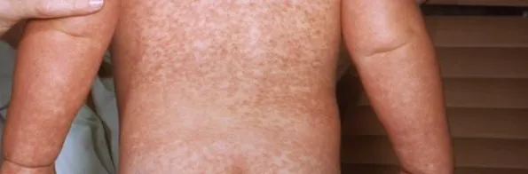
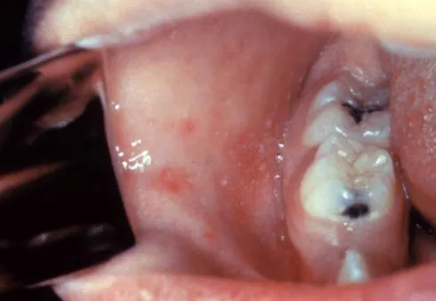
There is no specific antiviral. Treatment is supportive, vitamin A, and treating complications.
Non-pharmacological: isolate at home for 4 days after rash onset, keep away from pregnant women, infants and the immunocompromised; give a list of contacts to public health.
لا يوجد مضاد فيروسات نوعي. العلاج داعم، مع فيتامين A، وعلاج المضاعفات.
غير دوائي: العزل في البيت 4 أيام بعد بدء الطفح، والإبعاد عن الحوامل والرضّع وضعيفي المناعة؛ وسلّم قائمة المخالطين للصحة العامة.
Part 4الجزء 4
A mild illness in the child — a devastating one for the fetusمرض خفيف عند الطفل — ومدمِّر للجنين
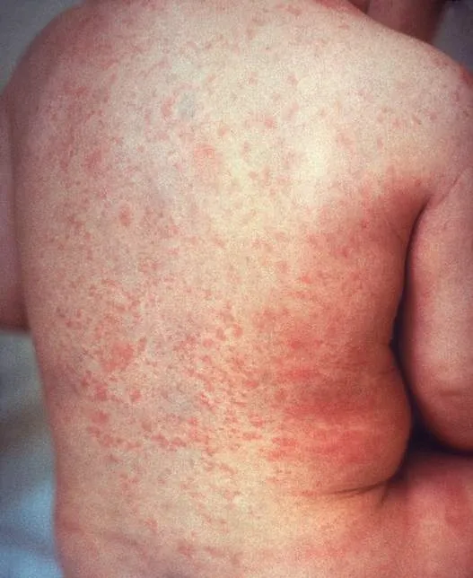
| Gestation at infection | Risk to the fetus |
|---|---|
| Before 11 weeks | Up to 90% — multiple defects, miscarriage, stillbirth |
| 11–16 weeks | About 10–20% — mainly deafness |
| 16–20 weeks | Low — occasional deafness |
| After 20 weeks | Rare; growth restriction at most |
| عمر الحمل عند الإصابة | الخطر على الجنين |
|---|---|
| قبل 11 أسبوعًا | حتى 90% — تشوّهات متعددة، وإجهاض، وولادة جنين ميت |
| 11–16 أسبوعًا | نحو 10–20% — الصمم أساسًا |
| 16–20 أسبوعًا | منخفض — صمم أحيانًا |
| بعد 20 أسبوعًا | نادر؛ تأخر النمو على الأكثر |
Part 5الجزء 5
Not a rash illness, but it travels with this group — fever, parotid swelling and preventable complicationsليس مرضًا طفحيًا، لكنه يرافق هذه المجموعة — حمّى وتورّم الغدة النكفية ومضاعفات يمكن الوقاية منها
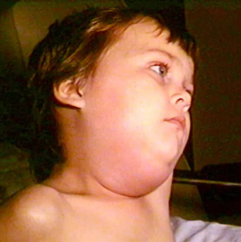
Some teaching notes say PCR is “not used” for mumps. The opposite is true: buccal-swab RT-PCR is the preferred confirmatory test (CDC), and IgM alone misses many cases in vaccinated people.
تقول بعض الملخصات التعليمية إن فحص PCR «لا يُستخدم» في النكاف. والصحيح عكس ذلك: RT-PCR على مسحة باطن الخد هو فحص التأكيد المفضَّل (CDC)، وفحص IgM وحده يفوّت كثيرًا من الحالات عند المطعَّمين.
Part 6الجزء 6
Usually benign in healthy children — dangerous in newborns, pregnancy, adults and the immunocompromisedحميد غالبًا عند الأطفال الأصحاء — وخطير عند حديثي الولادة والحوامل والبالغين وضعيفي المناعة
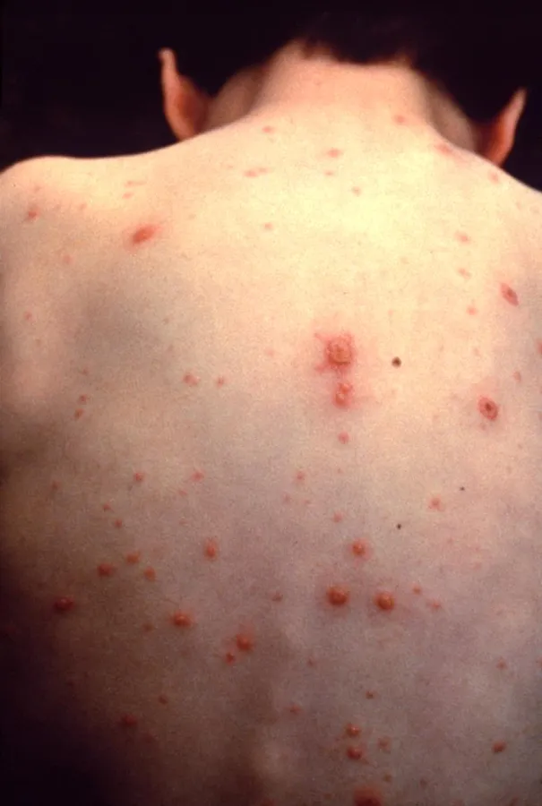
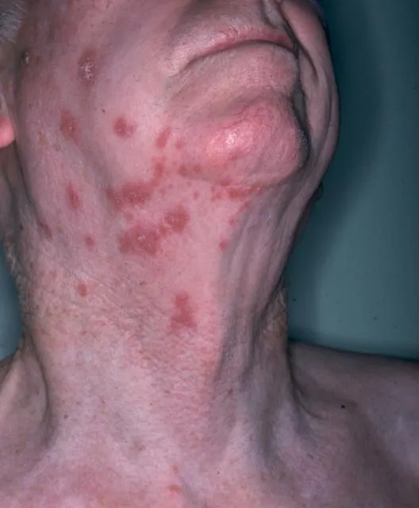
Healthy child under 12 years: supportive care only.
Oral aciclovir — start within 24 hours of rash onset — for people at higher risk of severe disease: age 13 years and over, chronic skin or lung disease, long-term salicylates, short or intermittent oral or inhaled corticosteroids, and secondary cases in the same household (they get a higher viral dose).
| Group | Treatment |
|---|---|
| Child (2 years and over), when indicated | Aciclovir 20 mg/kg (max 800 mg) orally 4 times a day for 5 days |
| Adolescent ≥13 years / adult | Aciclovir 800 mg 5 times a day for 7 days (or valaciclovir 1 g 3 times a day for 7 days) |
| Pregnant woman, presenting within 24 h of rash | Oral aciclovir 800 mg 5 times a day for 7 days (RCOG, UKHSA); admit if chest symptoms, neurological signs, haemorrhagic rash or dense lesions |
| Immunocompromised or neonate, or any severe case | IV aciclovir 10 mg/kg every 8 hours (dose by age and renal function, per formulary) for 7–10 days — admit |
Shingles in a child: usually mild and self-limiting in healthy children (often after chickenpox in infancy or in utero). Treat with aciclovir if immunocompromised, if the eye is involved (Hutchinson sign — vesicles on the tip of the nose — means urgent ophthalmology review) or if severe.
طفل سليم دون 12 سنة: رعاية داعمة فقط.
الأسيكلوفير الفموي — يُبدأ خلال 24 ساعة من بدء الطفح — لمن هم أعلى خطرًا للمرض الشديد: عمر 13 سنة فأكثر، وأمراض الجلد أو الرئة المزمنة، والساليسيلات طويلة الأمد، والكورتيزون الفموي أو المستنشق قصير الأمد أو المتقطع، والحالات الثانوية في البيت نفسه (لتلقيها جرعة فيروسية أعلى).
| الفئة | العلاج |
|---|---|
| طفل (سنتان فأكثر) عند وجود داعٍ | أسيكلوفير 20 ملغ/كغ (بحد أقصى 800 ملغ) بالفم 4 مرات يوميًا لمدة 5 أيام |
| مراهق 13 سنة فأكثر / بالغ | أسيكلوفير 800 ملغ 5 مرات يوميًا لمدة 7 أيام (أو فالاسيكلوفير 1 غ 3 مرات يوميًا لمدة 7 أيام) |
| امرأة حامل تراجع خلال 24 ساعة من الطفح | أسيكلوفير فموي 800 ملغ 5 مرات يوميًا لمدة 7 أيام (الكلية الملكية لأطباء النساء والتوليد وUKHSA)؛ وأدخِلها المستشفى عند أعراض صدرية، أو علامات عصبية، أو طفح نزفي، أو آفات كثيفة |
| ضعيف المناعة أو حديث الولادة، أو أي حالة شديدة | أسيكلوفير وريدي 10 ملغ/كغ كل 8 ساعات (الجرعة حسب العمر ووظيفة الكلى، وفق دليل الأدوية) لمدة 7–10 أيام — إدخال المستشفى |
الحزام الناري عند الطفل: خفيف غالبًا ويشفى ذاتيًا عند الأطفال الأصحاء (وكثيرًا ما يأتي بعد جديري في الرضاعة أو داخل الرحم). يُعالج بالأسيكلوفير عند ضعف المناعة، أو إصابة العين (علامة هتشنسون — حويصلات على طرف الأنف — تعني مراجعة عيون عاجلة)، أو الشدة.
| Exposed person | What to do |
|---|---|
| Healthy, non-immune, aged 12 months and over | Varicella vaccine within 3–5 days of exposure (best within 72 h); counts as dose 1 |
| Immunocompromised, non-immune | VariZIG 125 IU/10 kg IM (minimum 62.5 IU, max 625 IU) as soon as possible, up to 10 days after exposure |
| Newborn of a mother with onset 5 days before to 2 days after delivery | VariZIG as soon as possible |
| Preterm infant in hospital: ≥28 weeks with a non-immune mother; or <28 weeks or ≤1,000 g regardless of maternal immunity | VariZIG |
| Pregnant woman, non-immune (IgG negative) | US (CDC): VariZIG within 10 days. UK (UKHSA 2024, RCOG): oral aciclovir 800 mg 4 times a day or valaciclovir 1 g 3 times a day for 7 days, starting on day 7 after exposure (up to day 14). Follow the national pathway available to you. |
| If VariZIG is not available | IV immunoglobulin 400 mg/kg, or (AAP Red Book option) oral aciclovir 20 mg/kg 4 times a day for 7 days, starting 7–10 days after exposure |
| الشخص المعرَّض | ماذا تفعل |
|---|---|
| سليم وغير محصَّن، بعمر 12 شهرًا فأكثر | لقاح الجديري خلال 3–5 أيام من التعرّض (الأفضل خلال 72 ساعة)؛ ويُحتسب الجرعة الأولى |
| ضعيف المناعة وغير محصَّن | VariZIG بجرعة 125 وحدة لكل 10 كغ عضليًا (بحد أدنى 62.5 وحد أقصى 625 وحدة) بأسرع ما يمكن، حتى 10 أيام بعد التعرّض |
| حديث ولادة لأم بدأ طفحها بين 5 أيام قبل الولادة ويومين بعدها | VariZIG بأسرع ما يمكن |
| خديج في المستشفى: 28 أسبوعًا فأكثر وأمه غير محصَّنة؛ أو أقل من 28 أسبوعًا أو 1,000 غ أو أقل أيًّا كانت مناعة الأم | VariZIG |
| امرأة حامل غير محصَّنة (IgG سلبي) | الولايات المتحدة (CDC): VariZIG خلال 10 أيام. المملكة المتحدة (UKHSA 2024 والكلية الملكية): أسيكلوفير فموي 800 ملغ 4 مرات يوميًا أو فالاسيكلوفير 1 غ 3 مرات يوميًا لمدة 7 أيام، بدءًا من اليوم السابع بعد التعرّض (حتى اليوم 14). اتبع المسار الوطني المتاح لك. |
| إن لم يتوفر VariZIG | غلوبيولين مناعي وريدي 400 ملغ/كغ، أو (خيار الكتاب الأحمر للأكاديمية الأمريكية لطب الأطفال) أسيكلوفير فموي 20 ملغ/كغ 4 مرات يوميًا لمدة 7 أيام، يبدأ بعد 7–10 أيام من التعرّض |
Part 7الجزء 7
High fever in a well baby, then a rash as the fever breaksحمّى عالية عند رضيع بحال جيدة، ثم طفح مع انكسار الحمّى
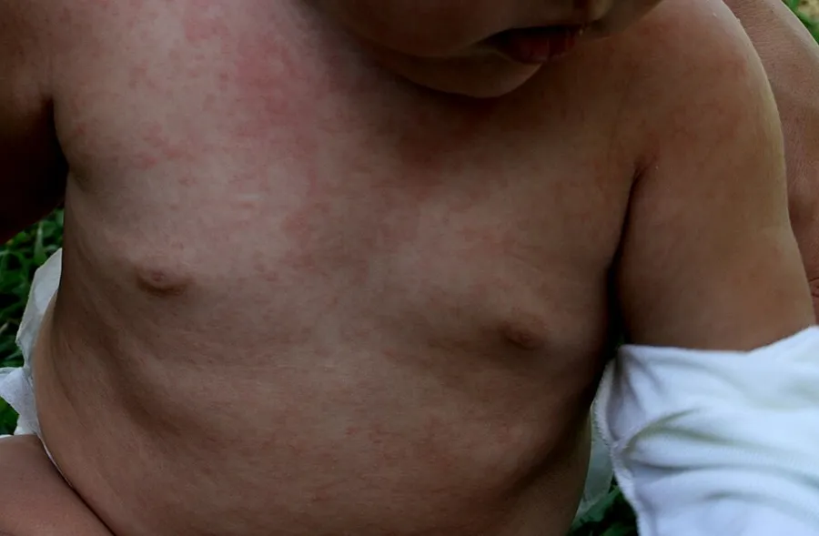
A rash that appears after amoxicillin was started for “tonsillitis” in a feverish toddler is often roseola, not a drug allergy. Ask exactly when the fever stopped and the rash started before labelling the child penicillin-allergic.
الطفح الذي يظهر بعد بدء الأموكسيسيلين لـ«التهاب لوزتين» عند طفل صغير محموم كثيرًا ما يكون وردية لا حساسية دوائية. اسأل بدقة متى توقفت الحمّى ومتى بدأ الطفح قبل أن تصف الطفل بأنه مصاب بحساسية البنسلين.
Part 8الجزء 8
“Slapped cheek” — harmless in most children, important in pregnancy and in children with sickle cell disease«الخد المصفوع» — غير مؤذٍ لمعظم الأطفال، ومهم في الحمل وعند الأطفال المصابين بفقر الدم المنجلي
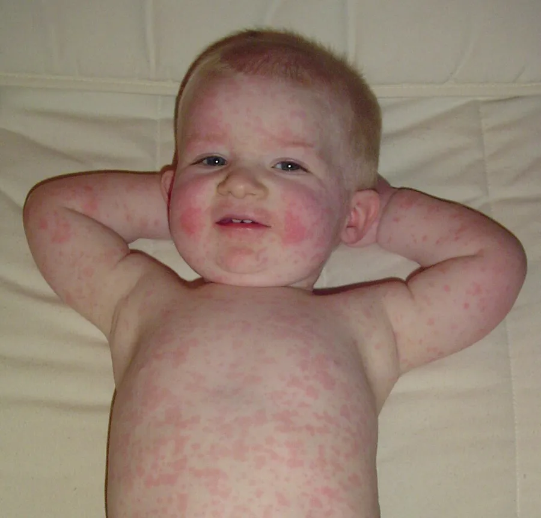
Part 9الجزء 9
Sore throat, sandpaper rash, strawberry tongue — treat with penicillin and watch for invasive diseaseالتهاب حلق، وطفح كورق الصنفرة، ولسان الفراولة — يُعالج بالبنسلين مع مراقبة المرض الغازي
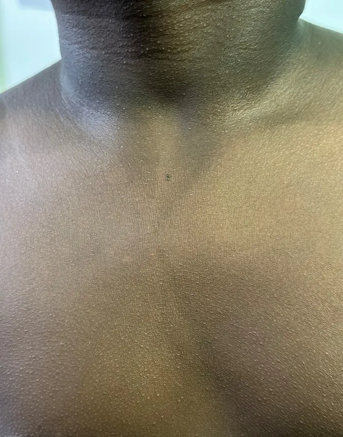
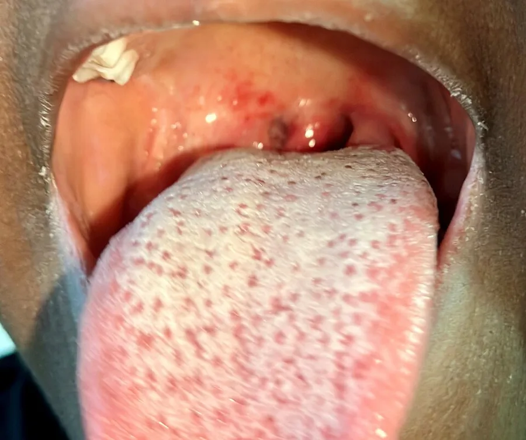
| Drug | Child dose | Duration |
|---|---|---|
| Amoxicillin (first line, palatable) | 50 mg/kg once daily (max 1,000 mg), or 25 mg/kg twice daily (max 500 mg/dose) | 10 days |
| Penicillin V | ≤27 kg: 250 mg 2–3 times a day; >27 kg: 500 mg 2–3 times a day | 10 days |
| Benzathine penicillin G IM (adherence doubtful) | ≤27 kg: 600,000 units; >27 kg: 1.2 million units | Single dose |
| Penicillin allergy, not anaphylactic: cefalexin | 20 mg/kg twice daily (max 500 mg/dose) | 10 days |
| Anaphylactic allergy: clindamycin | 7 mg/kg 3 times a day (max 300 mg/dose) | 10 days |
| or azithromycin | 12 mg/kg once daily (max 500 mg) | 5 days |
Doses per IDSA 2012 and AHA; check your local formulary. Macrolide resistance in GAS is common in some regions — use when penicillin cannot be.
| الدواء | جرعة الطفل | المدة |
|---|---|---|
| أموكسيسيلين (الخيار الأول، مستساغ) | 50 ملغ/كغ مرة يوميًا (بحد أقصى 1,000 ملغ)، أو 25 ملغ/كغ مرتين يوميًا (بحد أقصى 500 ملغ للجرعة) | 10 أيام |
| بنسلين V | 27 كغ أو أقل: 250 ملغ 2–3 مرات يوميًا؛ أكثر من 27 كغ: 500 ملغ 2–3 مرات يوميًا | 10 أيام |
| بنزاثين بنسلين G عضليًا (عند الشك في الالتزام) | 27 كغ أو أقل: 600,000 وحدة؛ أكثر من 27 كغ: 1.2 مليون وحدة | جرعة واحدة |
| حساسية بنسلين غير تأقية: سيفالكسين | 20 ملغ/كغ مرتين يوميًا (بحد أقصى 500 ملغ للجرعة) | 10 أيام |
| حساسية تأقية: كليندامايسين | 7 ملغ/كغ 3 مرات يوميًا (بحد أقصى 300 ملغ للجرعة) | 10 أيام |
| أو أزيثرومايسين | 12 ملغ/كغ مرة يوميًا (بحد أقصى 500 ملغ) | 5 أيام |
الجرعات وفق جمعية الأمراض المعدية الأمريكية (2012) وجمعية القلب الأمريكية؛ راجع دليل الأدوية المحلي. مقاومة العقديات للماكروليدات شائعة في بعض المناطق — استخدمها حين يتعذر البنسلين.
Part 10الجزء 10
The commonest bacterial skin infection in children — usually no fever, always contagiousأشيع عدوى جلدية جرثومية عند الأطفال — غالبًا بلا حمّى، ودائمًا معدية
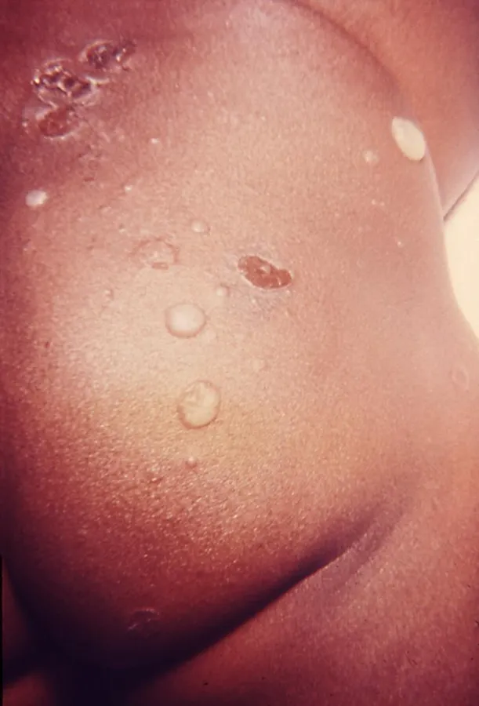
| Situation | First choice | Alternative |
|---|---|---|
| Localised non-bullous, not systemically unwell, not high risk | Hydrogen peroxide 1% cream 2–3 times a day for 5 days (not near the eyes) | If unsuitable: fusidic acid 2% 3 times a day for 5 days; mupirocin 2% if fusidic-acid resistance suspected or MRSA |
| Widespread, bullous, or systemically unwell / high risk of complications | Oral flucloxacillin 4 times a day for 5 days: 1 month–1 year 62.5–125 mg; 2–9 years 125–250 mg; 10–17 years 250–500 mg | Penicillin allergy: clarithromycin twice a day for 5 days (by weight); erythromycin in pregnancy |
| MRSA suspected or confirmed | Per culture and local guidance — e.g. clindamycin, or co-trimoxazole (not under 6 weeks) |
| الحالة | الخيار الأول | البديل |
|---|---|---|
| موضعية غير فقاعية، دون إعياء جهازي، وليست عالية الخطورة | كريم بيروكسيد الهيدروجين 1% 2–3 مرات يوميًا لمدة 5 أيام (بعيدًا عن العينين) | إن لم يناسب: حمض الفوسيديك 2% 3 مرات يوميًا لمدة 5 أيام؛ والموبيروسين 2% عند الاشتباه بمقاومة حمض الفوسيديك أو بالعنقوديات المقاومة للميثيسيلين |
| منتشرة، أو فقاعية، أو مع إعياء جهازي / خطر عالٍ للمضاعفات | فلوكلوكساسيلين فموي 4 مرات يوميًا لمدة 5 أيام: من شهر إلى سنة 62.5–125 ملغ؛ 2–9 سنوات 125–250 ملغ؛ 10–17 سنة 250–500 ملغ | حساسية البنسلين: كلاريثرومايسين مرتين يوميًا لمدة 5 أيام (حسب الوزن)؛ وإريثرومايسين في الحمل |
| اشتباه أو تأكيد العنقوديات المقاومة للميثيسيلين | حسب المزرعة والإرشادات المحلية — مثل الكليندامايسين، أو الكوتريموكسازول (لا يُعطى دون 6 أسابيع) |
Part 11الجزء 11
Hand, foot and mouth disease, meningococcal disease, Kawasaki disease, SSSS, dengue and mpoxمرض اليد والقدم والفم، والمكورات السحائية، وداء كاواساكي، ومتلازمة الجلد المسموط العنقودية، وحمّى الضنك، وجدري القردة
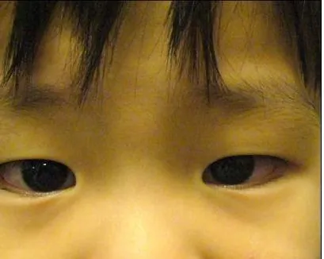
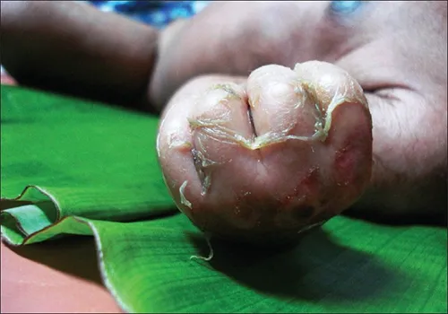
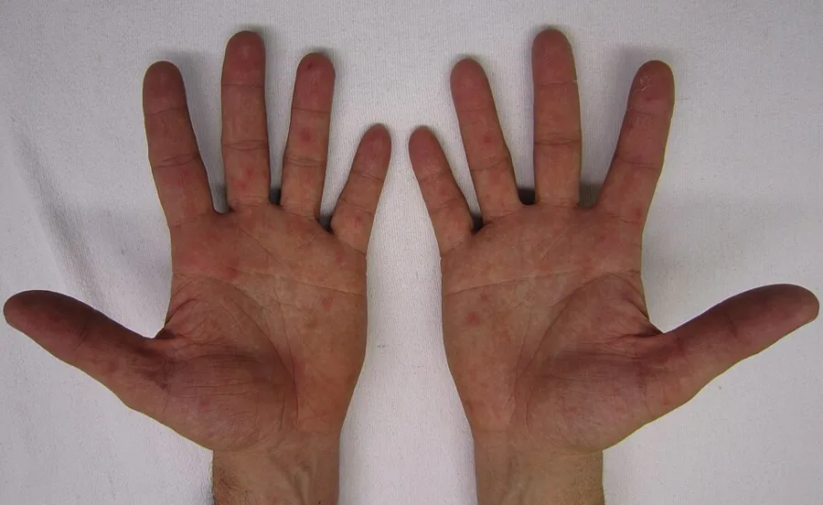
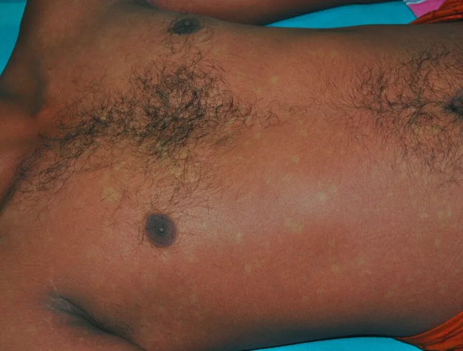
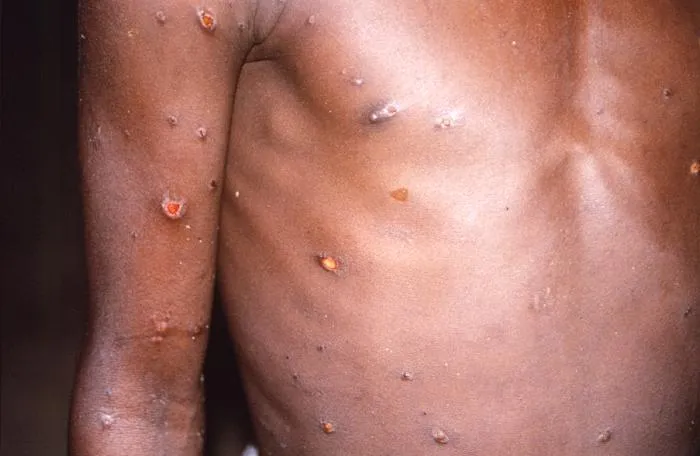
Part 12الجزء 12
The child with the rash is often not the person at greatest risk — the person at home isكثيرًا ما لا يكون الطفل المصاب بالطفح هو الأكثر عرضة للخطر — بل من في البيت
Ask three questions: what was the exposure (diagnosis, how close, how long), how many weeks pregnant is she, and is she immune (documented vaccines, past infection, booking serology)? Take blood for serology at the first contact — saved booking serum is valuable for comparison.
| Exposure | Risk to mother | Risk to fetus / newborn | Action |
|---|---|---|---|
| Rubella | Mild | CRS — up to 90% before 11 weeks | IgG now; if not immune, repeat serology at 3–4 weeks; fetal medicine if infected. IG not routine. |
| Measles | Pneumonia, death | Miscarriage, stillbirth, preterm birth; neonatal measles | Non-immune: IVIG 400 mg/kg within 6 days |
| Varicella | Pneumonia (worse in late pregnancy) | Fetal varicella syndrome (≤2%, before 20 weeks); severe neonatal varicella if onset −5 to +2 days of delivery | IgG within 24–48 h; non-immune: VariZIG within 10 days (US) or aciclovir/valaciclovir from day 7 (UK); aciclovir if rash appears |
| Parvovirus B19 | Arthropathy | Fetal anaemia, hydrops, loss (≈5–10% if <20 weeks) | IgG/IgM; if infected, MCA Doppler every 1–2 weeks for 8–12 weeks |
| Mumps | Usually mild | Possible first-trimester miscarriage; no malformations | Supportive; no PEP |
| GAS / scarlet fever | Puerperal sepsis risk after delivery | — | Treat if symptomatic; know sepsis signs postpartum |
| Enterovirus / HFMD | Mild | Neonatal infection if near term | Inform obstetric team if near term |
| Dengue | More severe dengue | Preterm birth; vertical transmission near term | Refer; paracetamol only |
| Mpox | Variable | Miscarriage, stillbirth, congenital mpox | Refer; vaccine per national guidance |
| Roseola, impetigo | — | No specific fetal risk | Reassure |
اطرح ثلاثة أسئلة: ما نوع التعرّض (التشخيص، ومدى القرب، والمدة)، وفي أي أسبوع من الحمل هي، وهل هي محصَّنة (لقاحات موثّقة، أو إصابة سابقة، أو فحوص مصلية عند فتح ملف الحمل)؟ اسحب عيّنة دم للفحص المصلي من أول مراجعة — فمصل فتح الملف المحفوظ مفيد للمقارنة.
| التعرّض | الخطر على الأم | الخطر على الجنين / الوليد | الإجراء |
|---|---|---|---|
| الحصبة الألمانية | خفيف | المتلازمة الخلقية — حتى 90% قبل 11 أسبوعًا | IgG الآن؛ وإن لم تكن محصَّنة يُعاد الفحص بعد 3–4 أسابيع؛ وطب الأجنة إن أصيبت. الغلوبيولين المناعي ليس روتينيًا. |
| الحصبة | التهاب رئوي، ووفاة | إجهاض، وولادة جنين ميت، وولادة مبكرة؛ وحصبة وليدية | غير المحصَّنة: غلوبيولين مناعي وريدي 400 ملغ/كغ خلال 6 أيام |
| الجديري المائي | التهاب رئوي (أشد في أواخر الحمل) | متلازمة الجديري الجنيني (2% أو أقل، قبل 20 أسبوعًا)؛ وجديري وليدي شديد إن بدأ بين 5 أيام قبل الولادة ويومين بعدها | IgG خلال 24–48 ساعة؛ وغير المحصَّنة: VariZIG خلال 10 أيام (أمريكا) أو أسيكلوفير/فالاسيكلوفير من اليوم السابع (بريطانيا)؛ والأسيكلوفير إن ظهر الطفح |
| الفيروس الصغير B19 | اعتلال مفصلي | فقر دم جنيني، واستسقاء، وفقد الجنين (نحو 5–10% قبل 20 أسبوعًا) | IgG وIgM؛ وإن أصيبت: دوبلر الشريان الدماغي الأوسط كل 1–2 أسبوع لمدة 8–12 أسبوعًا |
| النكاف | خفيف غالبًا | إجهاض محتمل في الثلث الأول؛ دون تشوهات | داعم؛ ولا وقاية بعد التعرّض |
| العقديات / الحمّى القرمزية | خطر حمّى النفاس بعد الولادة | — | عالج إن ظهرت الأعراض؛ واعرفي علامات الإنتان بعد الولادة |
| الفيروسات المعوية / مرض اليد والقدم والفم | خفيف | عدوى وليدية إن كانت قرب الولادة | أبلغ فريق التوليد إن كانت قرب الولادة |
| حمّى الضنك | ضنك أشد | ولادة مبكرة؛ وانتقال للجنين قرب الولادة | إحالة؛ وباراسيتامول فقط |
| جدري القردة | متفاوت | إجهاض، وولادة جنين ميت، وجدري قردة خلقي | إحالة؛ واللقاح وفق الإرشادات الوطنية |
| الوردية، والقوباء | — | لا خطر جنيني محدد | طمأنة |
| Exposure | Vaccine | Immunoglobulin / antiviral | Window |
|---|---|---|---|
| Measles | MMR (≥6 months) | IGIM 0.5 mL/kg (infants <12 months); IVIG 400 mg/kg (pregnant non-immune, immunocompromised) | Vaccine ≤72 h; IG ≤6 days |
| Varicella | Varicella vaccine (≥12 months) | VariZIG (high risk); aciclovir from day 7–10 as an alternative | Vaccine ≤3–5 days; VariZIG ≤10 days |
| Rubella | MMR for future protection (not effective as PEP) | IG not routine | — |
| Mumps | Third MMR dose in outbreaks | — | — |
| Meningococcal | Conjugate vaccine if vaccine-preventable serogroup | Ciprofloxacin, rifampicin or ceftriaxone | Within 24 h |
| Mpox | MVA-BN | Tecovirimat not for PEP | Ideally ≤4 days (up to 14) |
| التعرّض | اللقاح | الغلوبيولين المناعي / مضاد الفيروسات | النافذة |
|---|---|---|---|
| الحصبة | MMR (من 6 أشهر) | غلوبيولين عضلي 0.5 مل/كغ (الرضّع دون 12 شهرًا)؛ وغلوبيولين وريدي 400 ملغ/كغ (الحامل غير المحصَّنة وضعيف المناعة) | اللقاح خلال 72 ساعة؛ والغلوبيولين خلال 6 أيام |
| الجديري المائي | لقاح الجديري (من 12 شهرًا) | VariZIG (عالي الخطورة)؛ والأسيكلوفير من اليوم 7–10 بديلًا | اللقاح خلال 3–5 أيام؛ وVariZIG خلال 10 أيام |
| الحصبة الألمانية | MMR للحماية المستقبلية (غير فعّال وقايةً بعد التعرّض) | الغلوبيولين ليس روتينيًا | — |
| النكاف | جرعة ثالثة من MMR في الفاشيات | — | — |
| المكورات السحائية | اللقاح المقترن إن كانت المجموعة المصلية مما يقي منه اللقاح | سيبروفلوكساسين أو ريفامبيسين أو سيفترياكسون | خلال 24 ساعة |
| جدري القردة | MVA-BN | التيكوفيريمات ليس للوقاية | يُفضَّل خلال 4 أيام (حتى 14) |
Part 13الجزء 13
Vaccines, mass gatherings, mosquito control and public messagesاللقاحات، والتجمعات الكبرى، ومكافحة البعوض، ورسائل التوعية
Where to look next — the global and Saudi references behind this pageأين تبحث بعد ذلك — المراجع العالمية والسعودية التي بُنيت عليها هذه الصفحة


.JPG){kind=link}


.jpg){kind=link}